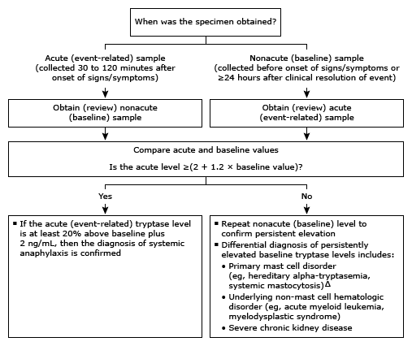

* Commercial immunoassays measure total tryptase, which includes mature and pro forms of alpha- and beta-tryptase. The normal reference range is ≤11.4 ng/mL in most laboratories. Interpretation of a specific abnormal result should be based on the reference range reported by the laboratory.
¶ Obtain specialty consultation. An allergy specialist can help differentiate mast cell disorders from other disorders in the differential diagnosis, including far more prevalent secondary mast cell activation due to allergic disease.
Δ Tryptase levels between 8 and 100 ng/mL are seen in a genetic condition called hereditary alpha-tryptasemia, which appears to affect up to 6% of the population with European ancestry. Tryptase levels in systemic mastocytosis (prevalence approximately 0.01%) are typically >5 ng/mL, although approximately 70% have levels >20 ng/mL. A level above the normal range increases the likelihood of one of these disorders, while a level <5 ng/mL makes them very unlikely.